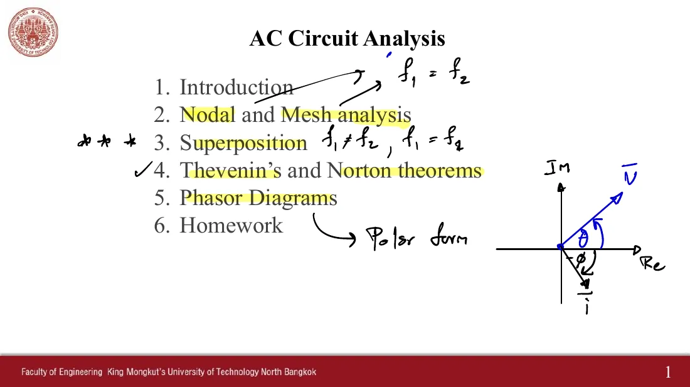
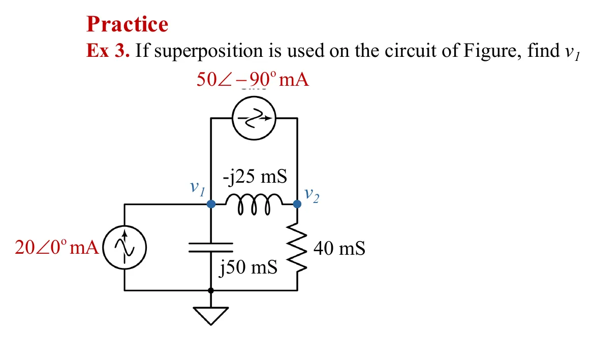
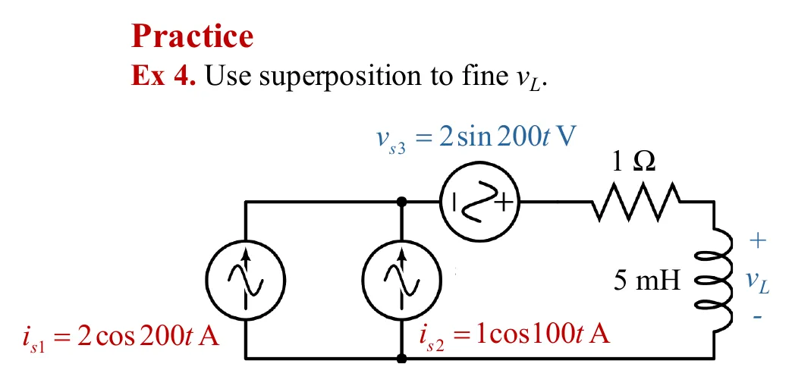

หลักการซ้อนทับของบทที่ 5 ยังใช้ได้ เพราะวงจรที่มี R, L, C ยังเป็นวงจรเชิงเส้น: ฆ่าแหล่งจ่ายทุกตัวยกเว้นตัวเดียว (แหล่งจ่ายแรงดัน → ลัดวงจร แหล่งจ่ายกระแส → เปิดวงจร) หาผลย่อย แล้วรวมกัน ผู้สอนติดดาวหัวข้อนี้ไว้ในห้อง เพราะมีสองกรณีที่ต้องแยกให้ออก ถ้าแหล่งจ่ายทุกตัวมีความถี่เดียวกัน (Ex 3) ผลย่อยเป็นเฟเซอร์ที่ ω เดียวกันและบวกกันได้ ถ้าความถี่ต่างกัน (Ex 4) อิมพีแดนซ์ของ L และ C ไม่เท่ากันในแต่ละความถี่ ต้องคิดทีละความถี่ แล้วบวกกันในรูปฟังก์ชันเวลาเท่านั้น
Superposition from chapter 5 still works, because a circuit of R, L and C is still linear: kill every source but one (voltage source → short, current source → open), find the partial response, then add. The teacher starred this topic in class, because there are two cases to tell apart. If all sources share one frequency (Ex 3), the partial responses are phasors at the same ω and simply add. If the frequencies differ (Ex 4), L and C have different impedances at each frequency, so each frequency is solved separately and the results add only as time functions.

วงจรเดียวกับ Ex 1 (หน้า 7.1) แยกเป็นสองภาพ: ① เหลือแหล่งจ่าย 20∠0° mA ตัวเดียว (อีกตัวเปิดวงจร วงกลมประ) และ ② เหลือแหล่งจ่าย 50∠−90° mA ตัวเดียว ภาพที่สามคือวงจรจริง ช่องสุดท้ายแสดงเฟเซอร์ \(\mathbf{V}_1'\) ต่อหัวต่อหางกับ \(\mathbf{V}_1''\) ทุกภาพหมุนด้วย ω เดียวกันจึงอยู่บนระนาบเดียวกันได้ เปิดเฉลยทีละขั้นแล้วภาพที่คิดเสร็จจะมีจุดวิ่ง
The circuit of Ex 1 (page 7.1) split into two pictures: ① with only the 20∠0° mA source left (the other one open, the dashed circle) and ② with only the 50∠−90° mA source. The third picture is the real circuit, and the last cell shows \(\mathbf{V}_1'\) and \(\mathbf{V}_1''\) head to tail; every picture turns at the same ω, so they share one plane. Open the solution step by step: a finished picture gets its moving dots.

แหล่งจ่ายสามตัวมีสองความถี่ ภาพ ①–③ เหลือแหล่งจ่ายทีละตัว และแต่ละภาพหมุนด้วยความเร็วของตัวเอง (ภาพที่ 200 rad/s เร็วเป็นสองเท่าของภาพที่ 100 rad/s) ภาพที่ 4 คือวงจรจริง จุดในภาพนั้นวิ่งด้วยผลรวมของ ①–③ ทุกขณะ กราฟใต้ภาพแสดง \(v_L'\), \(v_L''\) และผลรวม \(v_L\) ซึ่งไม่ใช่คลื่นไซน์ ปุ่มใต้ภาพแสดงว่าถ้าบวกเฟเซอร์ 2∠180° + 0.5∠180° จะได้กราฟที่ไม่ตรงกับความจริง
Three sources at two frequencies. Pictures ①–③ keep one source each, and each turns at its own speed (the 200 rad/s pictures twice as fast as the 100 rad/s one). Picture 4 is the real circuit, whose dots move with the sum of ①–③ at every instant. The graph under the pictures shows \(v_L'\), \(v_L''\) and their sum \(v_L\), which is not a sine wave. The button under the picture shows that adding the phasors 2∠180° + 0.5∠180° gives a curve that does not match reality.